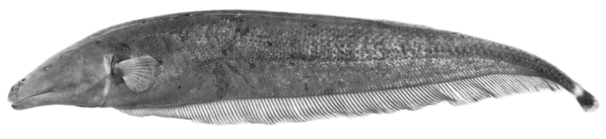

Systématique
- Ordre : Gymnotiformes
- Famille : Apteronotidae
- Genre : Apteronotus
- Espèce : A. anu

Apteronotus anu est un poisson électrique originaire du bassin du fleuve Paraná en Amérique du Sud.
C'est une espèce de taille moyenne pour le genre, avec une longueur maximale enregistrée de 26,4 cm. Il présente la morphologie typique des Apteronotidae : un corps allongé et comprimé latéralement, une nageoire anale extrêmement longue qui lui sert à la locomotion (ondulatoire), et une petite nageoire caudale filiforme. Il ne possède ni nageoires pelviennes ni nageoire dorsale.
Sa coloration est généralement uniforme et sombre. Il possède un organe neurogénique émettant des décharges électriques de faible voltage pour l'orientation et la communication (électrolocation).
C'est un poisson benthique (vivant près du fond) et nocturne. Dans son milieu naturel, il reste caché durant la journée dans les anfractuosités ou sous les débris végétaux pour se protéger des prédateurs.
Il n'existe quasiment aucune information sur sa maintenance en aquarium, l'espèce n'étant pas importée commercialement. Par analogie avec les autres espèces du genre, il est probablement territorial envers ses congénères.
Mode : ovipare.
Aucune information disponible sur la reproduction en captivité.
Dimorphisme sexuel : Aucune information précise publiée pour cette espèce spécifique. Cependant, le dimorphisme sexuel chez le genre *Apteronotus* se manifeste souvent par une modification de la forme du museau (plus long chez les mâles matures), mais cela reste hypothétique pour *A. anu* sans observation directe.
Espérance de vie : Aucune donnée précise disponible.
L'espèce est endémique du bassin du fleuve Paraná. Elle fréquente les eaux douces subtropicales de cette région.
Répartition

Origine naturelle :
- Bassin du fleuve Paraná.
- Présence confirmée au Brésil, au Paraguay et en Argentine.
Paramètres de maintenance
Température : Estimée entre 20 et 27 °C (basée sur le climat du bassin du Paraná).
pH : Probablement entre 6,0 et 7,5.
GH : Aucune donnée spécifique.
Courant : Modéré à fort (espèce fluviatile).
Volume conseillé : Minimum théorique de 200 à 300 L pour un individu adulte de 26 cm, avec de nombreuses cachettes.
Régime alimentaire
Régime : carnivore.
Il se nourrit d'invertébrés aquatiques benthiques (larves d'insectes, vers, crustacés).